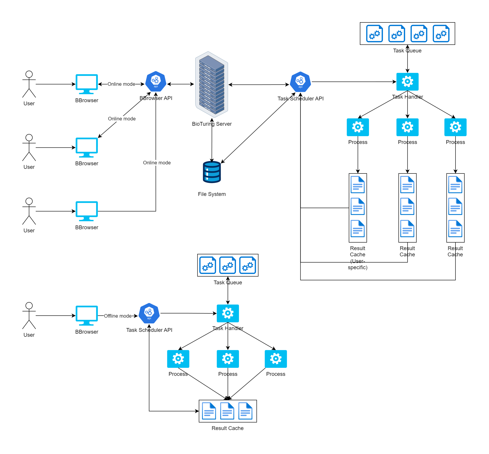

The BioTuring Task Scheduler is a core asynchronous execution engine integrated across both native standalone application layers (BBrowser offline mode) and cloud architectures via the BioTuring Enterprise Server Platform (BESP). The service handles heavy, computationally intensive analytical actions initialized by end-users.
To eliminate legacy bottlenecks where users were constrained to synchronous, single-task processing timelines, this scheduler introduces decoupled background message queues. Task requests are cleanly ingested, parsed, and handled sequentially by independent consumer threads. Final evaluation objects are automatically mapped to a Time-To-Live (TTL) caching layer to minimize repetitive computation overhead.
Architected the core asynchronous service infrastructure from scratch. Designed and deployed highly performant, type-safe REST API routes using Python and FastAPI to ingest and dispatch data analysis requests seamlessly.
Built robust process isolation, thread pools, and queuing logic to guarantee predictable execution behavior under variable computational loads. Implemented a managed TTL cache layer to optimize memory allocations and automatically clear expired datasets.
Maintained codebase health by establishing clean logging and unit testing protocols. Identified, isolated, and resolved race conditions and memory leaks within legacy multiprocessing integrations, greatly improving server availability.